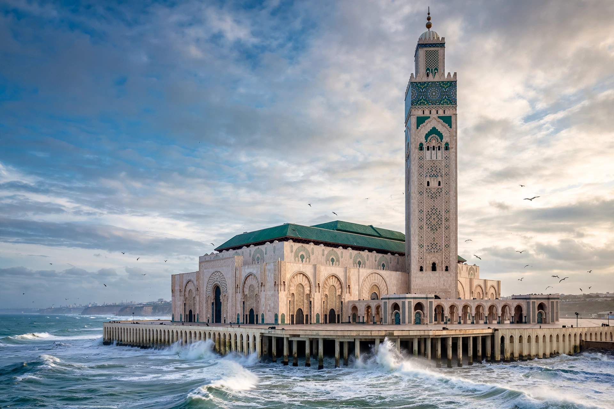

[Image placeholder: The Hassan II Mosque, rising over the Atlantic]| Country | Morocco |
|---|---|
| Population | About 3.8 million (metro estimates) |
| Arabic name | Ad-dār al-Bayḍāʾ — 'the white house' |
| Known for | Hassan II Mosque; the 1942 film Casablanca |
**Casablanca** is the largest city of Morocco and its economic and business centre, a port on the Atlantic coast. Founded on the site of the Berber town of Anfa, rebuilt by the Portuguese as Casa Branca and later by Moroccan sultans, it grew under the French protectorate (1912–56) into a showcase of colonial modernist architecture.
Casablanca's icons are the Hassan II Mosque — one of the largest mosques in the world, built partly over the ocean, with a 210 m minaret, the world's tallest — and the Art Deco and neo-Mauresque buildings of the downtown. The 1942 Humphrey Bogart film Casablanca made the city's name globally famous, although it was shot entirely in Hollywood; the real city hosted the 1943 Casablanca Conference of Roosevelt and Churchill.
Anfa was a Phoenician and Roman trading post and later a corsair base destroyed by the Portuguese in 1468. The modern port was built from 1907; during the Second World War the city saw the naval battle of Casablanca (1942) during Operation Torch.
Casablanca is Morocco's industrial and financial hub, with the continent's busy port, the Casa Finance City project, vast suburbs and bidonvilles, and football passion split between Raja and Wydad, whose derby is among Africa's fiercest.